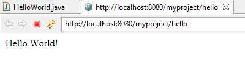

2.1 The basic structure of servlets
A Servlet is an Java application programming interface (API) running on the server, which intercepts requests made by the client and generates/sends a response. The javax.servlet and javax.servlet.http packages provide interfaces and classes for writing servlets.
A simple servlet that generates plain text
example - (HelloWorld.java)
package testPackage; // Always use packages.
import java.io.*;
import javax.servlet.*;
import javax.servlet.annotation.*;
import javax.servlet.http.*;
@WebServlet("/hello")
public class HelloWorld extends HttpServlet
{
@Override
public void doGet(HttpServletRequest request,
HttpServletResponse response)
throws ServletException, IOException
{
PrintWriter out = response.getWriter();
out.println("Hello World!");
}
}
Interpreting HelloWorld Servlet
doGet
Notice that there is no main() method in above program. When user enters a URL on the address line of browser the browser sends the request and the servlet’s doGet() method is called by the Container (tomcat).
doGet method takes two arguments: HttpServletRequest and HttpServletResponse
HttpServletRequest lets you get all of the incoming data; like form/query data, request headers.
HttpServletResponse lets you send document content and reponse headers back to the client.
doGet method throw two execeptions ServletException and IOException you need to include them in method signature.
You can get a PrintWriter from the response object. Use the PrintWriter object to send document content to the browser.
@WebServlet("/hello")
This is the URL relative to the application. HelloWorld.clsss is invoked with the URL:

If you have not installed eclipse and tomcat, read Setup and Installing Eclipse and Tomcat
To create and run above servlet, read Creating servlet in Eclipse IDE